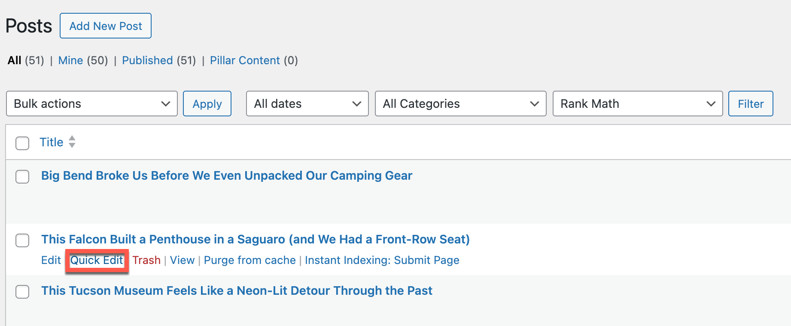
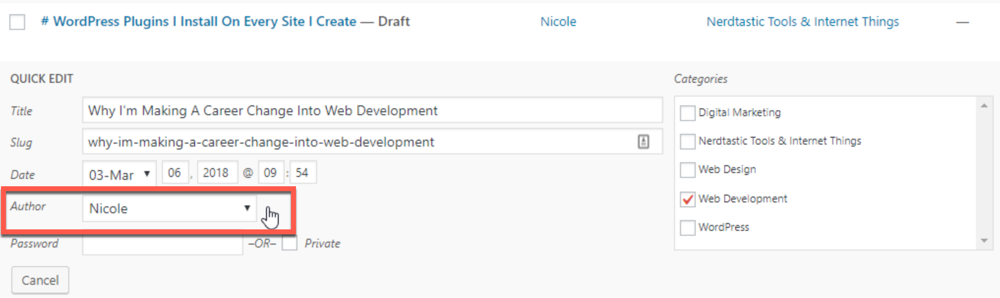

Software Support · Help Guide
Changing the Author of a Published WordPress Post
A screenshot-based WordPress help guide for a common publishing task.
The task
You don’t have to delete the post and start over. WordPress provides a way to update an existing post’s author using Quick Edit.
Steps to change the author
- Go to the WordPress dashboard. Navigate to Posts → All Posts.
- Find the post. Hover over the published post whose author you want to change.
- Select Quick Edit. This opens the inline editing options.
- Change the author. Select the correct person from the Author dropdown.
- Save. Click Update to apply your changes.
The person you want to assign as the author must already have a user account on the WordPress site.


Why this is useful
- Corrects posts assigned to the wrong account.
- Helps teams reassign content when responsibilities change.
- Preserves the existing post rather than creating a duplicate.
About this sample
This practical help guide was originally created with annotated WordPress screenshots. The instructions are reproduced here as a standalone sample.
Skills demonstrated
- WordPress
- Customer support content
- Step-by-step instructions
- User education